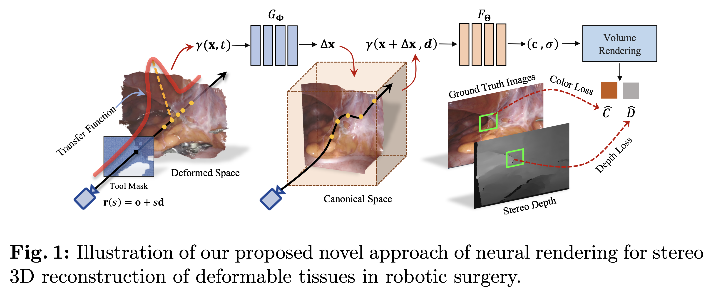
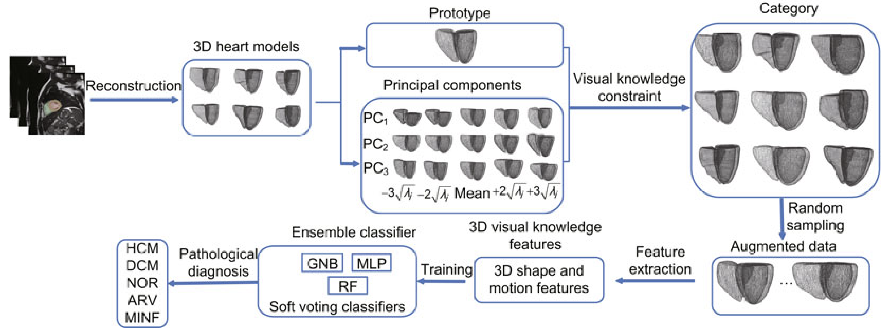

Others
Other Conference/Journal
ACM MM
Proceedings of the ACM International Conference on Multimedia
2023
MICCAI
International Conference in Medical Image Computing and Computer-Assisted Intervention
2022
Neural Rendering for Stereo 3D Reconstruction of Deformable Tissues in Robotic Surgery
Keywords: 3D Reconstruction, Neural Rendering, Robotic Surgery
Aim:
Contribution:
Motivation:
Architecture:
Comparison models: Cetin et al.@STACOM'17,
Front. Inf. Technol. Electron. Eng.
Frontiers of Information Technology & Electronic Engineering
2022
Visual recognition of cardiac pathology based on 3D parametric model reconstruction
Keywords: Cardiac, 3D parametric model, Cardiac pathology diagnosis
Aim: Construct and use 3D parametric model as an augmentation to generate heart data for better training a classifier of cardiac pathology.
Contribution:
- Construct 3D cardiac parametric model for each pathology and apply cardiac visual knowledge of different cardiac pathologies as parameters to generate reasonable 3D cardiac model.
- Sample 3D cardiac data with changing parameters of 3D cardiac parametric model as an augmentation to avoid class imbalance.
- Exract cardiac disease-based features and use it to make prediction.
Motivation: Almost all the existing method use 2D slices of heart to extract features and make prediction. However, these 2D slices are collected from 3D imaging data, so using 2D slices may largely ignore geometric information characterizing adjacency in the 3D neighbourhood. Besides, after constructing 3D cardiac parametric model, generating reasonable cardiac data by changing the parameters of 3D cardiac model is a good way as data augmentation.
Architecture:
First, they reconstruct 3D model from labeled 2D images, based on which they employ Statistical Shape Model(SSM) to obtain 3D cardiac parametric model. Then, after using PCA to determine the bases of the category, they use parameter variation to make prediction. Besides above, they could also random sample the parameters to generate reasonable cardiac data as an augmentation to train a better model for cardiac pathology’s classification.
Comparison models: Cetin et al.@STACOM'17, Isensee et al.@STACOM'17, Khened et al.@STACOM'17, Wolterink@STACOM‘17, Zheng et al.@MedIA'19, Chang and Jun@NeuroComputing'20, Ammar et al.@Comput Med Imag Graph'21, Thermos@MICCAI'21